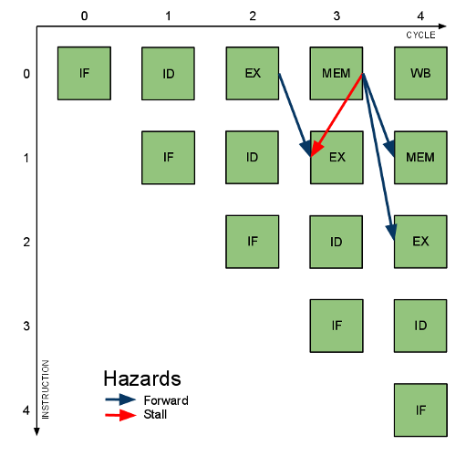

The PLP reference design forwards or stalls on all potential data hazards. Forwarding/Hazard logic is shown in the diagram in blue. Below is a table of all potential hazards, how each hazard is avoided, and an instruction sequence that exposes the hazard.
| Hazard | Forward/Stall | Example Instruction Sequence |
|---|---|---|
| EX->EX | Forward | addu $t0, $t1, $t2 |
| addu $t3, $t0, $t1 | ||
| MEM->MEM | Forward | lw $t0, 0($t1) |
| sw $t0, 0($t2) | ||
| MEM->EX | Forward | lw $t0, 0($t1) |
| nop | ||
| addu $t3, $t0, $t1 | ||
| MEM->EX | Stall | lw $t0, 0($t1) |
| addu $t3, $t0, $t1 |
The savvy reader may note that there could be hazards originating from the WB stage. This would happen in a RAW hazard between two instructions that were four stages apart. In fact, the register file is written to on the negative edge of the clock, and so finishes half-way through the WB stage, allowing an asynchronous read to occur in the ID phase, eliminating all WB hazards.